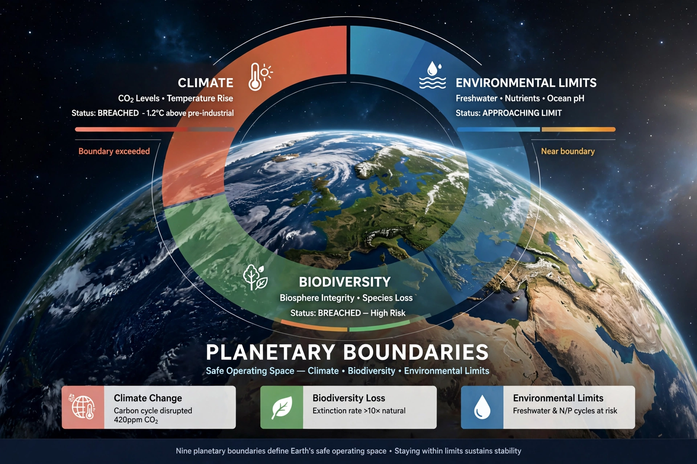

Planetary boundaries is a framework to describe limits to the impacts of human activities on the Earth system. Beyond these limits, the environment may no longer self-regulate, risking abrupt or irreversible change.
| Planetary boundaries | |
|---|---|
 | |
| Proposed | 2009, Johan Rockström et al. |
| Boundaries | 9 |
A 2023 assessment found six of nine boundaries transgressed.
Introduced in Nature in 2009 by a group led by Johan Rockström of the Stockholm Resilience Centre. The framework influenced sustainability policy but has been debated for quantification and regional variation.